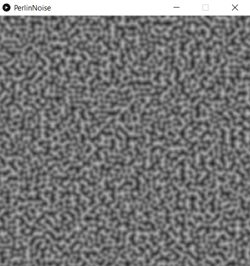
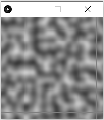
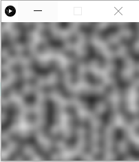

Perlin noise algorithm
This is a smaller programming project that I just finished. It is an implementation of the Perlin noise algorithm in 2 dimensions. I created it to learn more about procedurally generated terrain in video games, specifically Minecraft. It is written in Processing, though I plan to write it in pure Java soon, as I want to get more comfortable using Java.
As is the case with a number of my projects, I originally started this project a while ago (in this case, last year), stopped, and when I had learned more about the concepts behind the project, came back and finished it. In this case, I made a version of this program last year, but I couldn't get it to work. This was in large part due to my misunderstanding of the nuances of using vectors. However, after completing my first-year linear algebra class this past year, I felt confident enough to revisit the project and finish it off.

As my references, I mainly used the Wikipedia article on Perlin noise, however I also found this blog post to be quite useful as well regarding practical details on implementation.
In addition to my initial misunderstanding of vectors, I ran into some other issues/bugs while working on this project. One of these bugs was the presence of vertical and horizontal lines at certain positions on the image, as well as what looked like the image being segmented.

After some testing and thinking, I realized that the issue was due to my usage of single-precision floating point numbers as the counter variables in for loops. Due to the lack of precision of these numbers, the actual incrementation amount would be slightly above or below the set incrementation for each loop cycle. This would compound over multiple loop cycles until it would skip over a whole number, which produced the lines seen in the above photo. Switching the loop variables to integers and adding some extra variables in the loop body so that I didn't have to rewrite my already written dot product calculations fixed the problem and produced the image below. I had thought about using double-precision floats instead, but a lot of the functions in Processing that I was using only worked with single-precision floats, and casting them to doubles would have defeated the purpose of using doubles in my opinion.

I rewrote the code in Java mainly to practice my Java programming skills, and because it felt a little more professional than just using Processing. It is basically stock Java as I'm using JFrame for the graphics and some included Java libraries for some other functions. It is basically exactly the same as the Processing version (Processing syntax and Java syntax are extremely similar). The GitHub repository is here if you would like to take a look. In the future, I would like to couple this program with a 3D graphics program (potentially one that I wrote) and make a procedurally-generated 3D terrain.